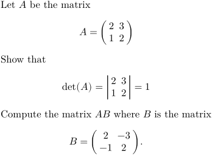
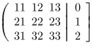
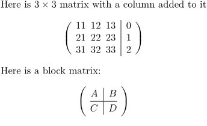
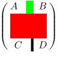
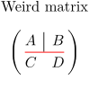
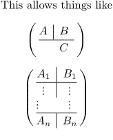
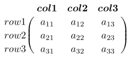
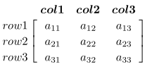

Contents
Defining with \definemathmatrix
In order to type matrices in math formulas, there is the command \definemathmatrix. Once a certain type of matrix is defined, one can also add a simple command in order to type matrices in a Matlab or Scilab format.
Here are a few examples.
-
\setuplayout[scale=0.8,width=13cm] \definemathmatrix[pmatrix] % defining matrix with parentheses [matrix:parentheses] [simplecommand=pmatrix] \definemathmatrix[bmatrix] % defining matrix with brackets [matrix:brackets] [simplecommand=bmatrix] \definemathmatrix[determinant] % defining determinant with bars [matrix:bars] [simplecommand=thedeterminant] Let $A$ be the matrix \startformula A = \startpmatrix \NC 2 \NC 3 \NR \NC 1 \NC 2 \NR \stoppmatrix \stopformula Show that \startformula {\rm det}(A) = \startdeterminant \NC 2 \NC 3 \NR \NC 1 \NC 2 \NR \stopdeterminant = 1 \stopformula Compute the matrix $AB$ where $B$ is the matrix \startformula B = \pmatrix{2, -3 ; -1, 2}. \stopformula
- 
Formatting delimiters with left and right
It is possible to have different delimiters on the left and on the right. For instance:
-
\definemathmatrix[pvmatrix] [left={\left(\thinspace}, right={\thinspace\right|}] \definemathmatrix[rpmatrix] [left={\left.\thinspace}, right={\thinspace\right]}] \startformula \startpvmatrix \NC 11 \NC 12 \NC 13 \NR \NC 21 \NC 22 \NC 23 \NR \NC 31 \NC 32 \NC 33 \NR \stoppvmatrix \startrpmatrix \NC 0 \NR \NC 1 \NR \NC 2 \NR \stoprpmatrix \stopformula
- 
Block matrices with vertical and/or horizontal lines
In ConTeXt LMTX beginning version 2020-11-27, it is possible to create « block » matrices where the blocks are separated by vertical or horizontal lines (respectively \VL and \HL). For instance the above example can be typeset more easily by the following :
-
\definemathmatrix[mymatrix] [left={\left\lparent\thinspace}, % instead of the left parenthesis, one can use any other fence right={\thinspace\right\rparent}] % instead of the right parenthesis, one can use any other fence \starttext Here is $3 \times 3$ matrix with a column added to it \startformula \startmymatrix \NC 11 \NC 12 \NC 13 \VL 0 \NR \NC 21 \NC 22 \NC 23 \VL 1 \NR \NC 31 \NC 32 \NC 33 \VL 2 \NR \stopmymatrix \stopformula Here is a block matrix: \startformula \startmymatrix \NC A \VL B \NR \HL \NC C \VL D \NR \stopmymatrix \stopformula
- 
Formatting lines
The two commands \VL and \HL take an optional parameter which defines the thickness of the rule and its color. So \HL[3,red] will produce a red horizontal rule three times thicker than the default matrix rule. The rule thickness for a specific matrix is defined with the [rulethickness=] parameter of \definemathmatrix.
-
\definemathmatrix[mymatrix][matrix:parentheses][rulethickness=2pt] \starttext \startformula \startmymatrix \NC A \VL[3,green] B \NR \HL[10,red] \NC C \VL D \NR \stopmymatrix \stopformula
- 
Other formatting example
-
\definemathmatrix[mymatrix][matrix:parentheses] Weird matrix \startformula \startmymatrix \NC A \VL B \NR \HL[red] \NC C \NC D \NR \stopmymatrix \stopformula
- 
-
\definemathmatrix[mymatrix][matrix:parentheses] This allows things like \startformula \startmymatrix \NC A \VL B \NR \HL \NC \NC C \NC \NR \stopmymatrix \stopformula \startformula \startmymatrix \NC A_1 \VL B_1 \NR \HL \NC \vdots \VL \vdots \NR \NC \vdots \NC \vdots \NR % there is probably something from here \HL \NC A_n \VL B_n \NR \stopmymatrix \stopformula
- 
Border matrices with \startbordermatrix
-
\startformula \startbordermatrix \NC \NC {\bi col 1} \NC {\bi col 2} \NC {\bi col 3}\NR \NC row 1 \NC a_{11} \NC a_{12} \NC a_{13} \NR \NC row 2 \NC a_{21} \NC a_{22} \NC a_{23} \NR \NC row 3 \NC a_{31} \NC a_{32} \NC a_{33} \NR \stopbordermatrix \stopformula
- 
Use \startbordermatrix for a bracketed version:
-
\startformula \startbbordermatrix \NC \NC {\bi col 1} \NC {\bi col 2} \NC {\bi col 3}\NR \NC row 1 \NC a_{11} \NC a_{12} \NC a_{13} \NR \NC row 2 \NC a_{21} \NC a_{22} \NC a_{23} \NR \NC row 3 \NC a_{31} \NC a_{32} \NC a_{33} \NR \stopbbordermatrix \stopformula
- 